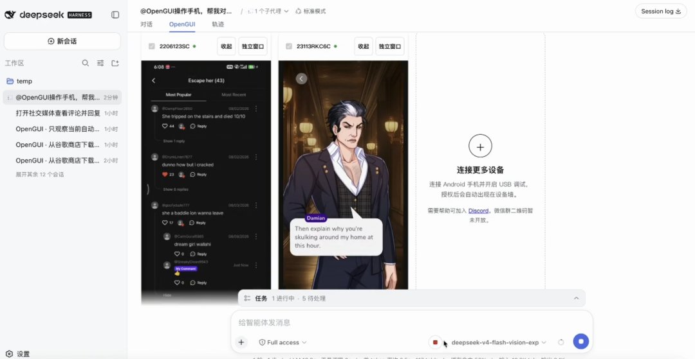
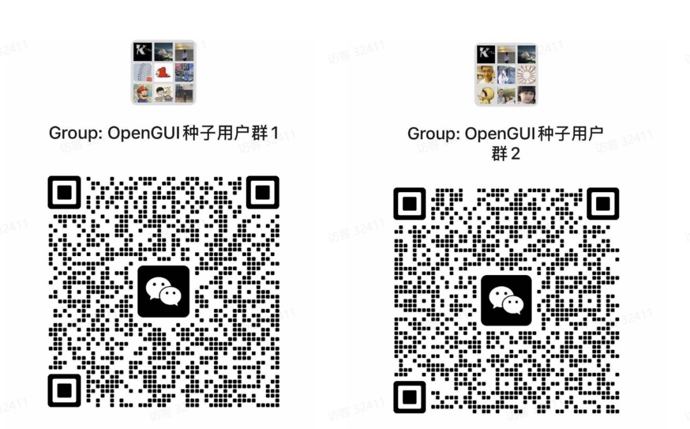

Vibe Coding 之后，生产的问题解决了，需要反复测试找问题的时代来了。
现在让AI来改一个App，早上提出需求，它中午就能交出三个版本。
问题是第一版还躺在手机里等人点，第三版已经开始问你要不要顺便重构了。
这就是Vibe Coding最可笑的一个后果。 生产端突然就装上了火箭，而验收端还在骑着共享单车。过去人们担心 AI 会取代程序员，而现在更实际的问题是，AI 写得这么快，谁来替它把按钮点完？ 于是 Vibe Testing 也来了。
这个词听上去很像 AI 圈又给旧东西换了个英文名。
毕竟 GUI 自动化测试早就有了，可以看屏幕、点手机的Agent也很多。
所以看到 OpenGUI 给 DeepSeek Harness（下文简称 DSH）做手机插件时，我一开始也没太激动。
直到把它放回 Coding Agent 的工作流里，这件事才变得有意思。
代码本来就是在DSH中修改的。修改之后，不需要把需求复制到另外一套手机Agent上，也不需要重新解释刚才改动的是哪个页面，更不需要让AI做五分钟的前情提要。直接在原来的对话中说：
@OpenGUI 在已选手机上走查当前 App 的启动、首页、搜索和设置流程，按设备分别汇总异常。遇到登录、支付或删除数据时先问我。
OpenGUI 会给每台选中的手机分一个绑定固定设备的子任务，看屏幕，点击，输入，滚动，再把执行过程和结果送回 DSH 的任务卡片。
按钮不能点击的话就让DSH回去改。修好之后再让手机走一遍。
这就是 Vibe Testing 真正有价值的地方： AI 学会了点屏幕是基操，写代码的 AI 后面终于跟了一个会验货的是高操。

以前的AI编程就相当于把后厨全部自动化了，但是每做出一道菜之后，老板都要亲自跑过来尝一尝咸淡。
厨师一分钟可以炒八盘，但是老板的舌头只有一条，因此餐厅的核心瓶颈就变成了老板的口腔耐久度。
OpenGUI 做的事情就相当于请了一个验菜员。厨师继续炒，验菜员吃，哪里夹生就拿盘子送回去。
当然，目前这个验菜员也没有专业到能接管质检部。
GUI Agent 的结果会受到页面状态、网络、弹窗和模型判断的影响。
今天能点过去的流程，明天可能被一个活动弹窗堵在门口。所以单元测试、接口测试和稳定的 E2E 脚本都不用急着办离职手续。
确定性逻辑要交给确定性测试。Vibe Testing 更适合补充另外一块：
刚改完没有写脚本的页面、临时走查、探索式测试和多台真机上重复回归。
这部分听起来没那么宏大，但很符合正常人的懒惰。
比如同一个搜索框，在一台手机上可以正常使用，在另一台小屏设备上会被键盘挡住；
同一个确认弹窗，在某个系统版本上关不掉；还有一台网络慢一点，加载动画转着转着就决定安享晚年。
这些问题不一定多难，纯靠人点又非常消耗寿命。 测试工程师当然可以做，但是测试工程师不应该把宝贵的脑细胞用在第十七次打开设置页面上。
OpenGUI可以把同一个任务发送到多个已经选择好的设备上，每个设备分别执行，然后最后再汇总。默认最多可以并行 4 台，配置范围为 1-16 台。
@OpenGUI 在所有已选手机上完成启动、登录、搜索和设置页走查，分别记录失败步骤、页面现象和设备差异。不要支付，不要删除数据。
一台手机是帮你点。多台手机一起点，才算开始碰到测试的生产力。
说到这里，正常人应该会冒出第二个问题：为了节省十来分钟的时间去点手机，是不是要先花上半天来部署呢？
这也是不少 GUI Agent 最容易进入喜剧区的环节。
宣传视频中它操作得很流畅，用户下载仓库之后就开始安装环境、启动后端、配置模型、排查端口。手机还没有来得及用，人就已经给Agent做了一下午的运维工作。
OpenGUI 把能力塞进了 DSH 插件里，不需要先部署完整的 OpenGUI 后端，默认优先复用当前 DSH 会话所选择的模型。该模型要同时支持图像输入和工具调用；如果不能兼容，则需要配置独立的视觉模型。
macOS 用户可以将下面这段话直接交给DSH：
Install and run the OpenGUI installer Skill from https://github.com/Core-Mate/OpenGUI/tree/main/deepseek-harness-plugin/skills/opengui-coremate-install for my DSH web profile. Install the latest stable release. Proceed autonomously, and only pause when I need to authorize or select a phone, add or select a DSH workspace, or provide fallback visual-model credentials.
安装 Skill 时会查找最新稳定的版本，下载发布包和校验文件，并且保留原来的 DSH 插件以及配置。
目前Linux和Windows用户都是通过手动安装包的方式来安装软件。
安装完毕之后，在DSH Web UI中单独发送：
/opengui
返回该行就表示插件已经加载完毕：
Usage: /opengui <task>
然后保持安卓手机解锁状态，完成USB调试授权，在OpenGUI Tab中选择设备。
第一次不要急着让它横扫整个App，首先要确定它能被看到：
/opengui 观察当前手机屏幕，告诉我你看到了什么，不要执行任何修改。
截至 2026 年 9 月 1 日，最新稳定版是 v0.1.7，8 月 31 日刚发布。
目前验证过的DSH基线是0.1.0-rc.7，Node.js需要^22.19.0或者>=24。
这一版还补了几个很生活化的问题：手机连上后会先显示截图，实时画面在后台准备；
视频流或者解码出错的时候，截图不会跟着消失；插件会检查新的稳定版，但是更新还是需要用户来确认。
都不太适合放在发布会大屏上展示的能力。
但工具好不好用，往往就死在这些没资格上大屏的小事上。
权限这边也没有为了展示 Agent 很能干，就把整套 ADB 随手扔给模型。
任意Shell、App安装卸载、文件传输、权限修改以及手机重启等操作都不在开放范围内。
每次要切换到另一个页面的时候，都必须以最新的观察为基础；如果重复的操作没有取得任何进展的话，就会被阻止。任务方向错误时，点击“停止 OpenGUI 操作”可以终止正在运行中的手机或者浏览器子任务。
发送、发布、购买、删除这种有明显后果的动作，本来也不该因为名字里带了 Agent 就自动获得豁免权。
这些限制让 Demo 少了一点“AI 接管世界”的气质，却让人更敢把真机接上去。
属于是牺牲了一点电影感，换回了一点财产安全。
写在最后
我不觉得 Vibe Testing 会取代传统测试。
它更像是 Vibe Coding 欠下的一笔基础设施债。生产速度突然提高了，但是验证能力跟不上了，所以大家就给Coding Agent补眼睛、补手、补真机。
OpenGUI 现在提供的是其中一条比较短的连接方式。已经在用 DSH 的人，可以装上试试；完全不用 DSH，也没必要为了一个插件突然迁徙全家桶。
如果要试的话，第一天也不用给它安排十个App的大工程。
就让它把你今天刚改完的页面，再点一遍。
代码都让 AI 写了，Bug 总不能还只让人类第一个看见，请直接进群吐槽bug。

开源地址： https://github.com/Core-Mate/OpenGUI
OpenGUI DSH 插件 v0.1.7： https://github.com/Core-Mate/OpenGUI/releases/tag/dsh‑coremate‑mobile‑v0.1.7
DeepSeek Harness 插件中文文档： https://github.com/Core‑Mate/OpenGUI/blob/main/deepseek‑harness‑plugin/README.zh.md
OpenGUI GUI Agent 用例： https://github.com/Core‑Mate/OpenGUI/blob/main/deepseek‑harness‑plugin/docs/use‑cases.zh.md